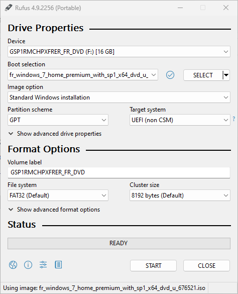
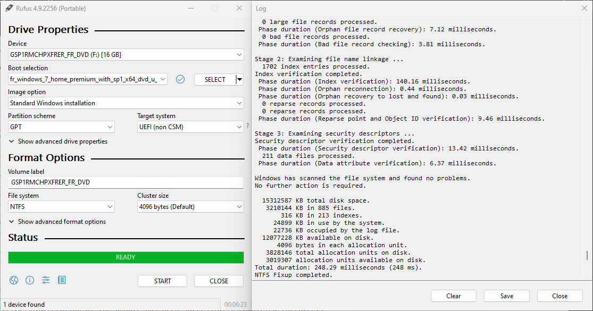
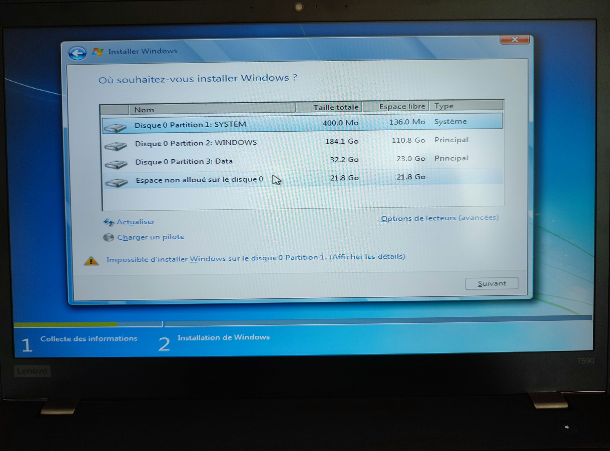
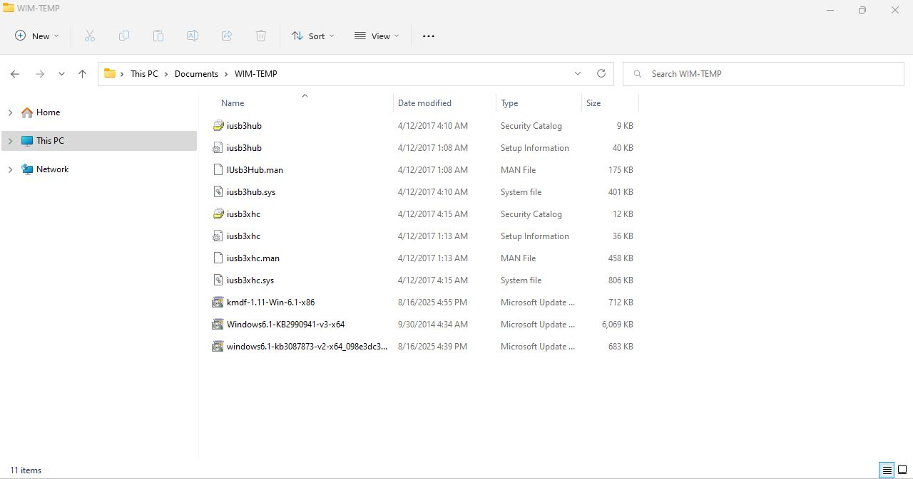
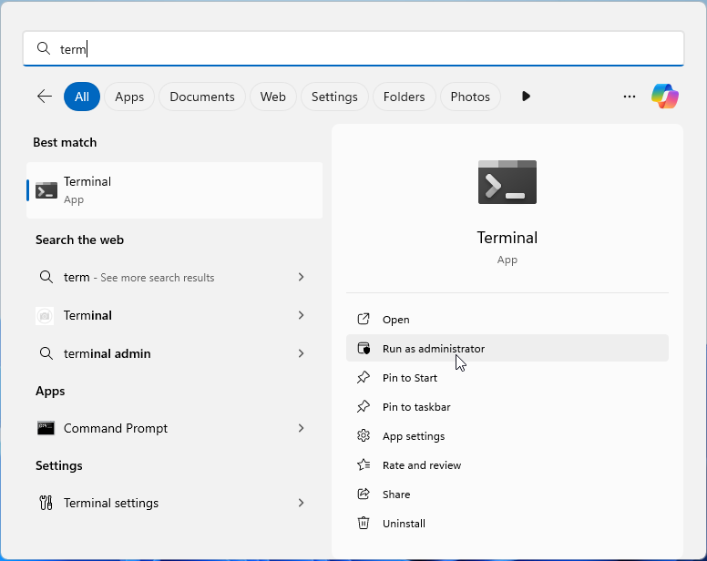
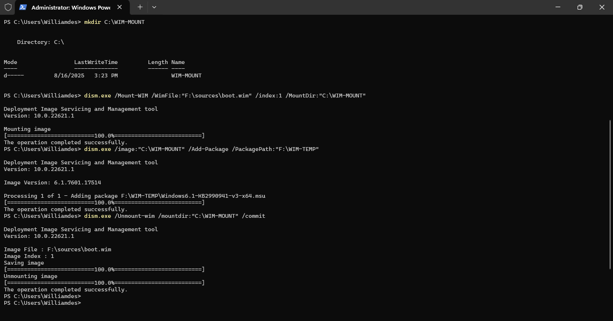
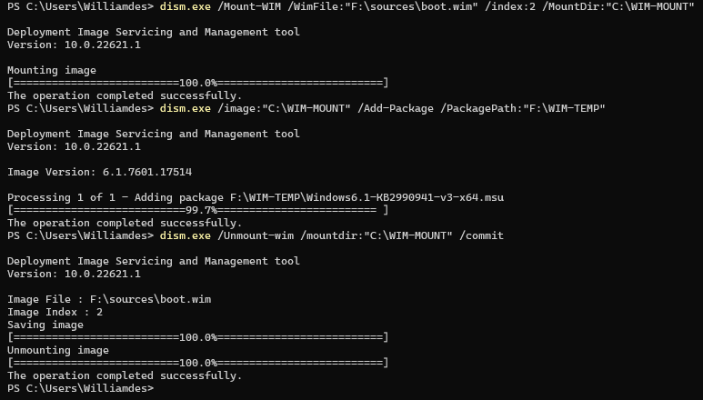
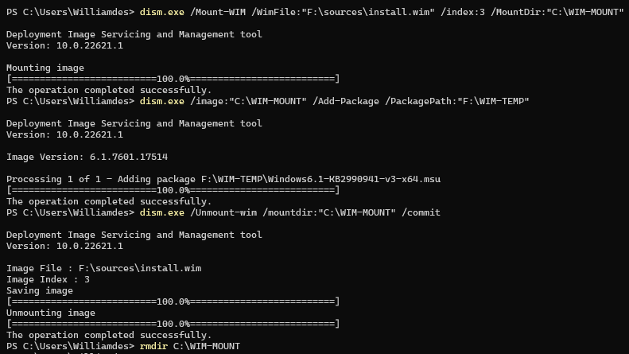

How to add NVME drivers to Windows 7 (install/repair) ?
In this blog post I will explain how to add NVME drivers to a Windows 7 installation.
Current setup and situation
- An old Windows 7 from a hard drive that I copied into an NVME M2 disk
dd if=/dev/sda of=/dev/nvme0n1 bs=10M conv=sync,noerror status=progress.- The old disk was plugged into an USB port. I used Debian live to copy the data.
- A ThinkPad T590.
- The old Windows 7 system booted fine on a ThinkPad P70
- On the new ThinkPad T590 it does not boot, because some drivers are missing.
Making an USB key
WARNING: For recovery you should use an ISO that is the same variant than the system you are trying to repair.
I used the ISO 7601.24214.180801-1700.win7sp1_ldr_escrow_CLIENT_HOMEPREMIUM_x64FRE_en-us.iso from archive.org
ISO fingerprints:
- sha512:
91c5cb78fbbaff269bab48f4b67b041afca5ec71cc7beb5ff7fb05e1e4fe8b44aae0e4b8d5fe5a62894a7f7c2e90f024abec66cc72e06b30eb7ab5d52d42381b - sha256:
42dc3f66741a3afbb9223b1e45e811c4f881c7ef19ccb7ac2fdb43025193901a - sha1:
c15bb9873548bd4a69371bc7966560c13162128c - rg-adguard: proof this is an official ISO (Windows 7 with Service Pack 1 (Updated August 2018))
On Windows you can use Rufus to make the USB drive.
 
On Linux/Debian 13 you can maybe do the work of Rufus, but I have no easy solution for you (given that we need to edit the result/ISO).
Adding drivers and all updates using UpdatePack7R2.exe
The tool is published here: simplix's blog
You can download it here: UpdatePack7R2-25.8.12.exe from archive.org
You can find your Index by running: dism.exe /Get-ImageInfo /imagefile:F:\sources\boot.wim
Or it will take ages by applying updates 4 times, one for each edition of Windows.
UpdatePack7R2-25.8.12.exe /WimFile=F:\sources\install.wim /Index=* /Boot=F:\sources\boot.wim /Optimize
Then, when it is finished and presents a log: you can ask to eject the USB key.
For installation
It works ! 
Note: I used the ISO fr_windows_7_home_premium_with_sp1_x64_dvd_u_676521.iso
For recovery
Using 7-zip you need to open F:\sources\install.wim and then copy C:\Windows\System32\Recovery\winRE.wim into an USB key.
Then use this key with Debian live ISO and replace the winRE.wim file you will find in the SYSTEM partition.
You can now reboot, you will now have NVME and USB 3.0 working fine in recovery mode !
Add drivers to Windows 7
When you are in recovery mode, open a terminal and run:
diskpart
list volume
exit
You can now understand what letter is assigned to your install drive.
Then run (G: is another USB key):
mkdir G:\TEMP
dism /Image:C:\ /Add-Package /PackagePath:"G:\WIM-TEMP" /ScratchDir:"G:\TEMP"
dism /Mount-Image /Image:D:\ /Add-Package /PackagePath:"G:\WIM-TEMP"
dism /Image:D:\ /Add-Driver /Driver:"G:\WIM-TEMP" /Recurse /forceunsigned
dism /Unmount-Image /MountDir:C:\tmp\mount /Commit
See: Dism /Add-Package documentation at Microsoft
If needed (ROLLBACK): dism /image:C:\ /cleanup-image /RevertPendingActions
https://superuser.com/a/938104/609233
Adding the NVME driver with dism
Check out pc2s.fr blog post that has a similar way to do it.
Alternative downloads:
Update WIM files
We will need some Microsoft updates & drivers:
- NVMe Support Hotfix (KB2990941)
- NVMe Bugfix (KB3087873)
- Kernel-Mode Driver Framework version 1.11 (KMDF supports kernel-mode drivers)
- Intel(R) USB 3.0 eXtensible Host Controller drivers (unzip:
Intel_USB_3.0_xHC_Driver_KBL_MR3_5.0.3.42\Drivers\Win7\x64)
On the USB key, create a folder named WIM-TEMP in your local user and extract the files into it:
Windows6.1-KB2990941-v3-x64.msuwindows6.1-kb3087873-v2-x64_098e3dc3e7133ba8a37b2e47260cd8cba960deb8.msukmdf-1.11-Win-6.1-x86.msuiusb3*

From the start menu, open the terminal as an Administrator: 
The boot.wim image
You can check by running: dism.exe /Get-ImageInfo /imagefile:F:\sources\boot.wim
- The first Index (
1) is forWindows PE- Run the commands
mkdir C:\WIM-MOUNTdism.exe /Mount-WIM /WimFile:"F:\sources\boot.wim" /index:1 /MountDir:"C:\WIM-MOUNT"dism.exe /image:"C:\WIM-MOUNT" /Add-Package /PackagePath:"C:\Users\Williamdes\Documents\WIM-TEMP"dism.exe /image:"C:\WIM-MOUNT" /Add-Driver /Driver:"C:\Users\Williamdes\Documents\WIM-TEMP" /Recursedism.exe /Unmount-wim /mountdir:"C:\WIM-MOUNT" /commit
- Run the commands

- The second Index (
2) is forWindows Setup- Run the commands
dism.exe /Mount-WIM /WimFile:"F:\sources\boot.wim" /index:2 /MountDir:"C:\WIM-MOUNT"dism.exe /image:"C:\WIM-MOUNT" /Add-Package /PackagePath:"C:\Users\Williamdes\Documents\WIM-TEMP"dism.exe /image:"C:\WIM-MOUNT" /Add-Driver /Driver:"C:\Users\Williamdes\Documents\WIM-TEMP" /Recursedism.exe /Unmount-wim /mountdir:"C:\WIM-MOUNT" /commit
- Run the commands

The install.wim image
You should check by running: dism.exe /Get-ImageInfo /imagefile:F:\sources\install.wim
For the second ISO, there is 4 indexes:
1-> Windows 7 Home Basic2-> Windows 7 Home Premium3-> Windows 7 Professional4-> Windows 7 Ultimate
Use the right one. For the second ISO use the index 3.
- The third index (
3) is forWindows 7 Professional- Run the commands
dism.exe /Mount-WIM /WimFile:"F:\sources\install.wim" /index:3 /MountDir:"C:\WIM-MOUNT"dism.exe /image:"C:\WIM-MOUNT" /Add-Package /PackagePath:"C:\Users\Williamdes\Documents\WIM-TEMP"dism.exe /image:"C:\WIM-MOUNT" /Add-Driver /Driver:"C:\Users\Williamdes\Documents\WIM-TEMP" /Recursedism.exe /Unmount-wim /mountdir:"C:\WIM-MOUNT" /commitrmdir C:\WIM-MOUNT
- Run the commands

Now, eject the USB key.
The winRE.wim image
This is the recovery image from the SYSTEM partition.
You can extract it from an existing Windows installation and perform the following commands:
You can check by running: dism.exe /Get-ImageInfo /imagefile:C:\Users\Williamdes\Documents\winRE.wim
- The first index (
1) isMicrosoft Windows Recovery Environment (x64)- Run the commands
mkdir C:\WIM-MOUNTdism.exe /Mount-WIM /WimFile:"C:\Users\Williamdes\Documents\winRE.wim" /index:1 /MountDir:"C:\WIM-MOUNT"dism.exe /image:"C:\WIM-MOUNT" /Add-Package /PackagePath:"C:\Users\Williamdes\Documents\WIM-TEMP"dism.exe /image:"C:\WIM-MOUNT" /Add-Driver /Driver:"C:\Users\Williamdes\Documents\WIM-TEMP" /Recursedism.exe /Unmount-wim /mountdir:"C:\WIM-MOUNT" /commitrmdir C:\WIM-MOUNT
- Run the commands
Put the image back into the original computer.
Notes
This article is not perfect, it was a lot of trial an error.
Using UpdatePack7R2 was the best solution, as it made me a working USB drive to boot.
Please email me to improve the article or provide feedback.
Also, on the ThinkPad T590 I could get the graphics working for Windows 7 using this custom driver: Intel UHD Graphics 610/630 x64 driver for Windows 7, 8.x, 10 (up to 1607)
That said I could not find a way to make the USB 3.0 work in the running Windows 7 OS.
And it seems to be impossible to have a driver that works for the Intel Wifi card 8086:9df0:8086:0030 - Cannon Point-LP CNVi. I tried modifying the Windows 10 driver and after it installs the network card does not work. That said ethernet worked as expected.
More ISOs
-
_Getintopc.com_Win.7.Pro.April.18-04-2023.iso from getintopc.com.
ISO fingerprints:
- sha512:
476876266fe51033ced4aa3e316aa7ffde6f5931aecbb01f6ae6756b43539df53c29a360dcd92764e674db9a613ac92042c9d521f1f604661035fa092e4ff2e3 - sha256:
3b8821c9d77aaf72704329c4556804348c403c163b3be5a3932408226098859b - sha1:
a8f7f11f3216636f40c57c0db3851658d6a0ea15 - rg-adguard: not found, this ISO is not official.
- archived at: archive.org.
- sha512:
-
fr_windows_7_professional_with_sp1_x64_dvd_u_678724.iso from lecrabeinfo.net.
- sha1:
f9f0512f7ca5e2cd1502a41f6e88d80f4655bbcd. - rg-adguard: proof this is an official ISO (Windows 7 with Service Pack 1 (Updated May 2011))
- sha1:
-
Windows_7_64-bit_Professional_x64.iso from archive.org.
ISO fingerprints:
- sha512:
ab0db0283f61a5bbe44797d74546786bf41685175764a448d2e3bd629f292f1e7d829757b26be346b5044d78c9c1891736d93237cee4b1b6f5996a902c86d15f - sha256:
3dae1a531b90fa72e59b4a86b20216188d398c8c070da4a5c5a44fe08b1b6e55 - sha1:
0bcfc54019ea175b1ee51f6d2b207a3d14dd2b58 - rg-adguard: proof this is an official ISO (Windows 7 with Service Pack 1 (Updated May 2011))
- sha512:
-
fr_windows_7_home_premium_with_sp1_x64_dvd_u_676521.iso from lecrabeinfo.net
ISO fingerprints:
- sha512:
4be431b327b557adbe46e45e8ea166e6538e6ef9a27e8d05a2ce5f246579f2b2 - sha256:
5f791cd996b9ffdfb812ee5e245923a4c1553fc9ed3f4985755d52f598d827ea - sha1:
7f3e41579c3404ba86d4a53ec13f69844f2473be - rg-adguard: proof this is an official ISO (Windows 7 with Service Pack 1 (Updated May 2011))
- sha512: